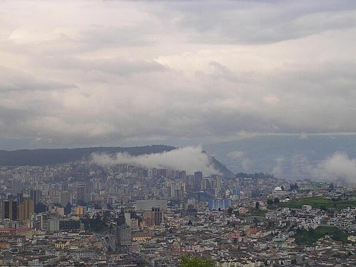

The CIA World Factbook provides valuable information about Ecuador. It has been an independent nation since . What is now Ecuador formed part of the northern Inca Empire until the Spanish conquest in . Quito became a seat of Spanish colonial government in and part of the Viceroyalty of New Granada in . The territories of the Viceroyalty - New Granada (Colombia), Venezuela, and Quito - gained their independence between and and formed a federation known as Gran Colombia. When Quito withdrew in , the traditional name was changed in favor of the "Republic of the Equator. Between and , Ecuador lost territories in a series of conflicts with its neighbors. A border war with Peru that flared in was resolved in 1999. Although Ecuador marked 30 years of civilian governance in , the period was marred by political instability.
 Image courtesy of the CIA World Factbook.